Density Estimation for SDSS “Great Wall”¶
Introduction¶
In this notebook, we are going to estimate density of galaxies in the SDSS “Great Wall” using different methods.
Raw data are often displayed in a way like scattered point or sorted with different sized bins in histogram. However, it hard to see a smooth distribution pattern in dots and histogram bins. Therefore, we need estimators for mining the underlying distribution pattern.
Firstly, we will apply Kernal Density Estimation (KDE) with different kernels (Gaussian, top-hat, and exponential kernels). For a set of measurements 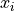, the KDE at x is
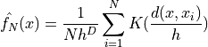
where D is the dimensions of the parameter space.
Secondly, we will use K-Nearest-Neighbor Estimation with different structure scales (different K values). The estimated function is calculated as
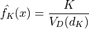
Lastly, we will use Gaussian Mixture Model (GMM) on the same dataset. The density function of points is given by
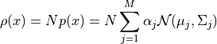
Import Data and Methods¶
The sample data used in this notebook is the a galaxy sample contains 8014 galaxies centered in the SDSS “Great Wall”. Data reference from Gott III et al 2005.
The main methods used here are KernalDensity, KNeighborsDensity, and GaussianMixture.
import numpy as np
from matplotlib import pyplot as plt
from matplotlib.colors import LogNorm
from sklearn.neighbors import KernelDensity
from astroML.density_estimation import KNeighborsDensity
from sklearn.mixture import GaussianMixture
from astroML.datasets import fetch_great_wall
Create Grids and Define Figure Format¶
# Create the grid on which to evaluate the results
Nx = 50
Ny = 125
xmin, xmax = (-375, -175)
ymin, ymax = (-300, 200)
Xgrid = np.vstack(map(np.ravel, np.meshgrid(np.linspace(xmin, xmax, Nx),
np.linspace(ymin, ymax, Ny)))).T
# adjust figure into the same size
def adjust_figure(x, y):
fig = plt.figure(figsize=(x, y))
fig.subplots_adjust(left=0.12, right=0.95, bottom=0.2, top=0.9,
hspace=0.01, wspace=0.01)
# define plot_figure to plot all KDE figures with the same format.
def plot_figure(number, data, text):
ax = plt.subplot(number, aspect='equal')
ax.imshow(data, origin='lower', norm=LogNorm(),
extent=(ymin, ymax, xmin, xmax), cmap=plt.cm.binary)
ax.text(0.95, 0.9, text, ha='right', va='top',
transform=ax.transAxes,
bbox=dict(boxstyle='round', ec='k', fc='w'))
ax.set_xlim(ymin, ymax - 0.01)
ax.set_ylim(xmin, xmax)
#ax.images[0].set_clim(0.01, 0.8)
return ax
<ipython-input-2-8a6e15f89c3f>:6: FutureWarning: arrays to stack must be passed as a "sequence" type such as list or tuple. Support for non-sequence iterables such as generators is deprecated as of NumPy 1.16 and will raise an error in the future.
Xgrid = np.vstack(map(np.ravel, np.meshgrid(np.linspace(xmin, xmax, Nx),
Show Input Data in Scattered Points¶
The plot projects galaxies in SDSS “Great Wall” as scatted points by their spatial locations onto the equatorial plane (declination ~ 0). The graph below shows the location of each point, but it is hard to get “clustered information” from.
# Fetch the great wall data
X = fetch_great_wall()
adjust_figure(5,2.2)
# First plot: scatter the points
ax1 = plt.subplot(111, aspect='equal')
ax1.scatter(X[:, 1], X[:, 0], s=1, lw=0, c='k')
ax1.text(0.95, 0.9, "input", ha='right', va='top',
transform=ax1.transAxes,
bbox=dict(boxstyle='round', ec='k', fc='w'))
ax1.set_xlim(ymin, ymax - 0.01)
ax1.set_ylim(xmin, xmax)
ax1.set_xlabel('$y$ (Mpc)')
ax1.set_ylabel('$x$ (Mpc)')
plt.show()
Evaluate KDE with Gaussian Kernel¶
Use a Gaussian kernel to evaluate the kernel density. The function 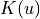, a smooth function, represents the weight at a given point, which is normalized such that 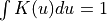.
The expression for Gaussian kernel is
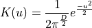
where D is the number of dimensions of the parameter space and 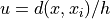.
# evaluate Gaussian kernel
def estimate_kde(ker):
kde = KernelDensity(bandwidth=5, kernel=ker)
log_dens = kde.fit(X).score_samples(Xgrid)
dens = X.shape[0] * np.exp(log_dens).reshape((Ny, Nx))
return dens
dens1 = estimate_kde('gaussian')
adjust_figure(5,2.2)
ax = plot_figure(111, dens1.T, "Gaussian $(h=5)$")
ax.set_xlabel('$y$ (Mpc)')
ax.set_ylabel('$x$ (Mpc)')
Text(0, 0.5, '$x$ (Mpc)')
Evaluate KDE with Top-hat Kernel¶
Use a top-hat (box) kernel to evaluate the kernel density. The expression for top-hat kernel is
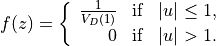
This kernel gives the most “spread out” estimation for each distribution freature.
# Third plot: top-hat kernel
dens2 = estimate_kde('tophat')
adjust_figure(5,2.2)
ax = plot_figure(111, dens2.T, "top-hat $(h=5)$")
ax.set_xlabel('$y$ (Mpc)')
ax.set_ylabel('$x$ (Mpc)')
Text(0, 0.5, '$x$ (Mpc)')
Evaluate KDE with Exponential Kernel¶
Use a exponential kernel to evaluate the kernel density. The expression for exponential kernel is
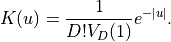
where 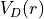 is the volume of a D-dimensional hypersphere of radius r.
This kernel gives the “sharpest” estimation for each distribution feature.
# Fourth plot: exponential kernel
dens3 = estimate_kde('exponential')
adjust_figure(5,2.2)
ax = plot_figure(111, dens3.T, "exponential $(h=5)$")
ax.set_xlabel('$y$ (Mpc)')
ax.set_ylabel('$x$ (Mpc)')
Text(0, 0.5, '$x$ (Mpc)')
Evaluate density using K-Nearest-Neighbor Estimation¶
Another estimator is the K-nearest-neighbor estimator, originally proposed by Dressler et al. 1980 . In this method, the implied point density at an arbitrary position x is estimated as
where 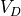 is evaluated volume, and D is the problem dimensionality.
By taking the assumption that the underlying density field is locally constant, we can further simplify this method as
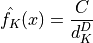
where C is a scaling factor evaluated by requiring that the sum of the product of 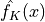 and pixel volume is equal to the total number of data points.
In this method, we can change parameter k to get different estimation result. K should be at least 5 because the estimator is biased and has a large variance for smaller K; see Casertano, S. and Hut, P.
# calculate K Neighbors Density with k = 5
knn5 = KNeighborsDensity('bayesian', 5)
dens_k5 = knn5.fit(X).eval(Xgrid).reshape((Ny, Nx))
# plot K Neighbor with k = 5
adjust_figure(5,2.2)
ax = plot_figure(111, dens_k5.T, "$k$-neighbors $(k=5)$")
ax.set_xlabel('$y$ (Mpc)')
ax.set_ylabel('$x$ (Mpc)')
Text(0, 0.5, '$x$ (Mpc)')
The fractional accuracy increases with K at the expense of the spatial resolution. Taking k = 40 instead of k = 5, we see different estimation result.
# calculate K Neighbors Density with k = 40
knn40 = KNeighborsDensity('bayesian', 40)
dens_k40 = knn40.fit(X).eval(Xgrid).reshape((Ny, Nx))
# plot K Neighbor with k = 40
adjust_figure(5,2.2)
ax = plot_figure(111, dens_k40.T, "$k$-neighbors $(k=40)$")
ax.set_xlabel('$y$ (Mpc)')
ax.set_ylabel('$x$ (Mpc)')
Text(0, 0.5, '$x$ (Mpc)')
Compare Estimated Results¶
adjust_figure(15,4.4)
# First plot: scatter the points
ax1 = plt.subplot(231, aspect='equal')
ax1.scatter(X[:, 1], X[:, 0], s=1, lw=0, c='k')
ax1.text(0.95, 0.9, "input", ha='right', va='top',
transform=ax1.transAxes,
bbox=dict(boxstyle='round', ec='k', fc='w'))
ax1.set_xlim(ymin, ymax - 0.01)
ax1.set_ylim(xmin, xmax)
# Second plot: gaussian kernel
ax2 = plot_figure(232, dens1.T, "Gaussian $(h=5)$")
# Third plot: K nearest neighbor with k=5
ax3 = plot_figure(233, dens_k5.T, "$k$-neighbors $(k=5)$")
# Fourth plot: exponential kernel
ax4 = plot_figure(234, dens3.T, "exponential $(h=5)$")
# Fifth plot: top-hat kernel
ax5 = plot_figure(235, dens2.T, "top-hat $(h=5)$")
# sixth plot: K nearest neighbor with k=40
ax6 = plot_figure(236, dens_k40.T, "$k$-neighbors $(k=40)$")
for ax in [ax1, ax2, ax3]:
ax.xaxis.set_major_formatter(plt.NullFormatter())
for ax in [ax4, ax5, ax6]:
ax.set_xlabel('$y$ (Mpc)')
for ax in [ax2, ax3, ax5, ax6]:
ax.yaxis.set_major_formatter(plt.NullFormatter())
for ax in [ax1, ax4]:
ax.set_ylabel('$x$ (Mpc)')
plt.show()
Use Gaussian Mixture Model¶
GMM calculate the underlying pdf of a point as a sum of multi-dimensional Gaussians using the equation below
where M is the number of Gaussians, 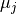 is the the location, and 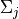 is the covariance of a Gaussian.
# Calculate GMM
def compute_GMM(n_clusters, max_iter=1000, tol=3, covariance_type='full'):
clf = GaussianMixture(n_clusters, covariance_type=covariance_type,
max_iter=max_iter, tol=tol, random_state=0)
clf.fit(X)
print("converged:", clf.converged_)
return clf
clf = compute_GMM(n_clusters=100)
log_dens = clf.score_samples(Xgrid).reshape(Ny, Nx)
# plot figures
fig = plt.figure(figsize=(5, 4.4))
fig.subplots_adjust(hspace=0, left=0.08, right=0.95, bottom=0.13, top=0.9)
ax = fig.add_subplot(211, aspect='equal')
ax.scatter(X[:, 1], X[:, 0], s=1, lw=0, c='k')
ax.set_xlim(ymin, ymax - 0.01)
ax.set_ylim(xmin, xmax)
ax.xaxis.set_major_formatter(plt.NullFormatter())
plt.ylabel(r'$x\ {\rm (Mpc)}$')
ax = fig.add_subplot(212, aspect='equal')
ax.imshow(np.exp(log_dens.T), origin='lower', cmap=plt.cm.binary,
extent=[ymin, ymax, xmin, xmax])
ax.set_xlabel(r'$y\ {\rm (Mpc)}$')
ax.set_ylabel(r'$x\ {\rm (Mpc)}$')
plt.show()
converged: True